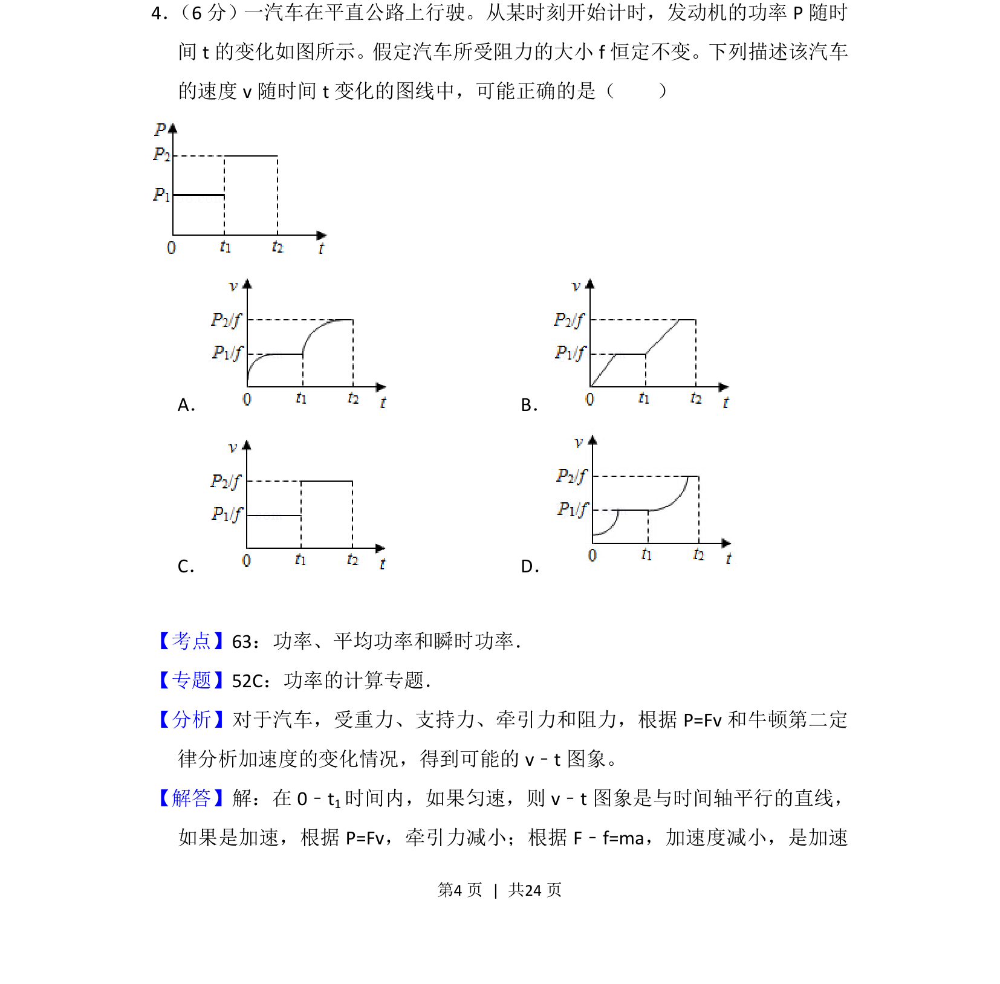
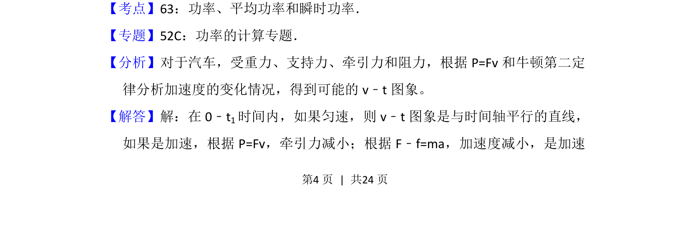
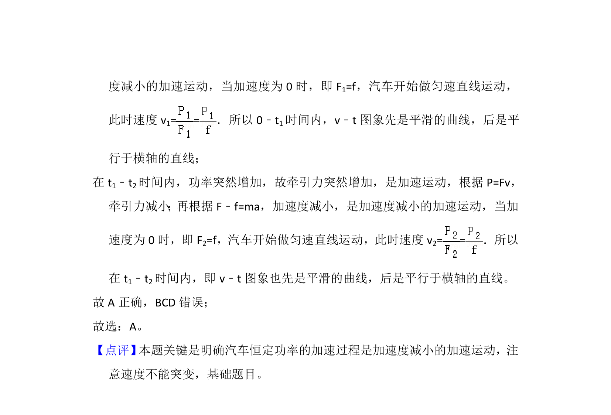

考点：功率 平均功率 瞬时功率 牛顿第二定律

汽车以恒定阻力在不同功率下行驶，通过P=Fv和牛顿第二定律分析速度图像变化趋势。


📄 原 PDF 第 4 页：
素材/真题/吉林/2008-2024·（吉林）物理高考真题/2015年高考物理试卷（新课标Ⅱ）（解析卷）.pdf
4． （6分）一汽车在平直公路上行驶。从某时刻开始计时，发动机的功率P随时 间t的变化如图所示。假定汽车所受阻力的大小f恒定不变。下列描述该汽车 的速度v随时间t变化的图线中，可能正确的是（ ） A．B． C．D．
【考点】63：功率、平均功率和瞬时功率．菁优网版权所有 【专题】52C：功率的计算专题． 【分析】对于汽车，受重力、支持力、牵引力和阻力，根据P=Fv和牛顿第二定 律分析加速度的变化情况，得到可能的v﹣t图象。 【解答】解：在0﹣t 1时间内，如果匀速，则v﹣t图象是与时间轴平行的直线， 如果是加速，根据P=Fv，牵引力减小；根据F﹣f=ma，加速度减小，是加速